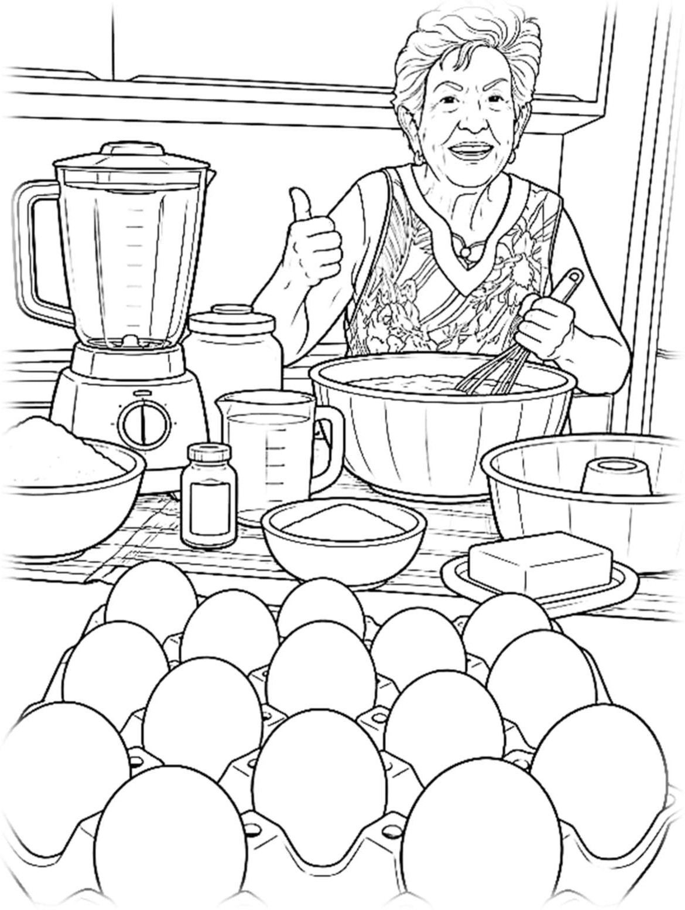

A cozinha de Zelinda e o Sabor da Saudade

Tenho certeza que os netos sentem saudade dos tempos em que a casa vivia cheia dos primos. Não era só da vitamina de frutas, preparada com tanto carinho, nem do barulho do liquidificador que anunciava mais uma delícia para os pequenos.
É saudade dos bolos saindo do forno, do cheiro doce que se espalhava pela casa, da mesa rodeada de crianças e das mãozinhas ansiosas esperando o primeiro pedaço. Afinal, a especialista Zelinda transformava sua cozinha em um verdadeiro lugar de amor, onde cada bolo tinha um sabor especial e cada receita guardava um pedacinho de sua história.
Os netos cresceram, foram para a escola, para o trabalho e seguiram seus caminhos. A cozinha ficou mais quieta, mas as lembranças permaneceram vivas. Porque os sabores da infância não se esquecem: ficam guardados no coração, trazendo de volta o aconchego da casa da avó, o carinho de suas mãos e aquele gostinho inconfundível de amor de vó.
Os bolos de Zelinda nunca foram apenas bolos. Eram abraços em forma de receita, doces lembranças que o tempo jamais conseguirá apagar.